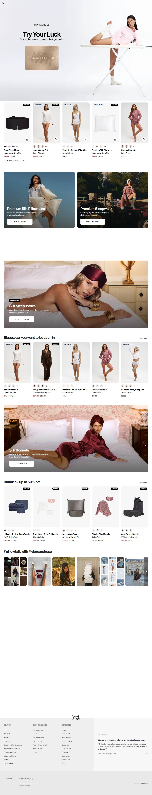
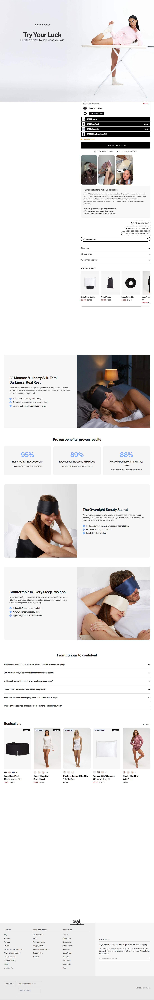
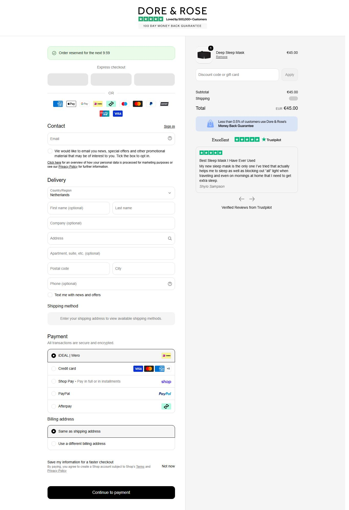

A operacao mais bem estruturada dentro da categoria. 688 anuncios ativos sobre 15.020 historicos: queima 22 criativos para manter 1 no ar, o que so se sustenta com vencedor pagando a conta.
Medido na Meta Ad Library em 20/07/2026, atualizado em 22/07/2026. Contagem global por pagina via page_ids + estimated_total_count.
Angulo de venda: Conforto e frescor. Produto de marca proprio 'Aeris(TM)'. Criativos: 'Hot Nights? Stay Cool with Aeris(TM)', 'Stay Cool All Night Long'.
Cluster de paginas: Dore & Rose, The Sleep Expert, Dr. Dan Gartenberg rodando o mesmo criativo.
Headlines dos anuncios ativos, coletadas na Ad Library em 20/07/2026. E o que da pra modelar sem inventar.
| Headline real | Por que funciona |
|---|---|
| "Trust Us, He'll Notice" | Angulo de PARCEIRO: compra pra ser notada. Terceiro na jogada |
| "500K+ women won't sleep without this" | Prova social massiva + numero. Ancoragem de manada |
| "22 Momme Mulberry Silk" | Mecanismo de MATERIAL: especificacao tecnica (momme) como diferencial |
| "my soft life era has an official uniform" | Cultura/tendencia: pega a 'soft life era' do TikTok |
| "You are how you sleep" | Identidade: eleva pijama a declaracao de quem voce e |
| "Comfort that actually looks good" | Quebra a falsa escolha entre conforto e beleza |
Visitas mensais medidas. Este e o dado de "acesso" real da loja, nao estimativa.
Medido via products.json. Mediana e o preco do meio do catalogo, nao o ticket medio real.
Tipos no catalogo: Pajamas (89), Eye Masks (62), sem_tipo (29), Ponytail Holders (27), Travel Pouches (9), Pillowcases & Shams (9), Headbands (4), Quilts & Comforters (4)
| Produto | Preco | Compare-at |
|---|---|---|
| Pointelle Cami and Short Set | $60.00 | — |
| Pointelle Jersey Sleep Set | $69.00 | — |
| Pointelle Cardigan | $48.00 | — |



Tranco piorando de 288.713 para 359.438 no periodo medido. Volume de anuncio alto com trafego caindo sugere que estao pagando mais caro pelo mesmo resultado.